Bienvenue dans Pointage
Pointage remplace les feuilles de papier pour les jeux de société de la famille. L’app calcule les totaux, suit qui brasse, connaît les règles de pointage de chaque jeu et garde l’historique de toutes les parties.
Utilisez la table des matières pour aller à une fonction, ou la recherche en haut pour trouver un mot (par exemple « joker », « brasser » ou « sauvegarde »).
1Installer l’app
Une seule adresse pour toute la famille : tinyurl.com/pointagef (ou le code QR). La page propose automatiquement la bonne version selon l’appareil.
Android (téléphone ou tablette)
- Ouvrez l’adresse dans Chrome et touchez Télécharger l’app.
- Si Chrome avertit que le fichier peut être dangereux, choisissez Télécharger quand même.
- Ouvrez le fichier téléchargé. Android demande d’autoriser l’installation d’applications : activez l’option, puis revenez en arrière.
- Si Play Protect affiche un avertissement : Plus de détails, puis Installer quand même.
iPhone et iPad
- Ouvrez l’adresse dans Safari et touchez Ouvrir l’app.
- Touchez Partager (le carré avec une flèche), puis Sur l’écran d’accueil et Ajouter.
- Lancez ensuite Pointage depuis son icône : l’app s’ouvre en plein écran et fonctionne même sans Internet.
Ordinateur
Ouvrez l’adresse et choisissez Ouvrir l’app : elle fonctionne dans tout navigateur.
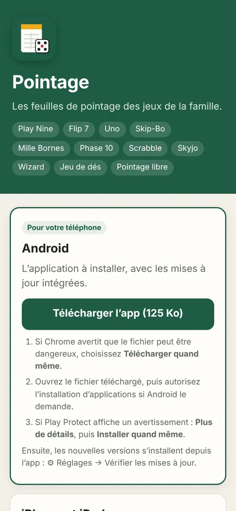
2L’accueil
Parties en cours : les parties non terminées, avec le pointage de chacun. Touchez-en une pour la reprendre là où vous étiez.
Nouvelle partie : une tuile par jeu. Le petit livre 📖 d’une tuile ouvre les règles du jeu sans commencer de partie.
En haut à droite : Ludo (avec la petite étiquette IA) ouvre Ludo, l’assistant, pour poser une question ; 📘 ouvre ce manuel, ⚙︎ ouvre les Réglages.
En bas : les onglets Jeux, Joueurs, Historique et Stats.
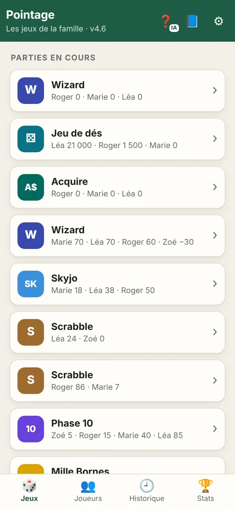
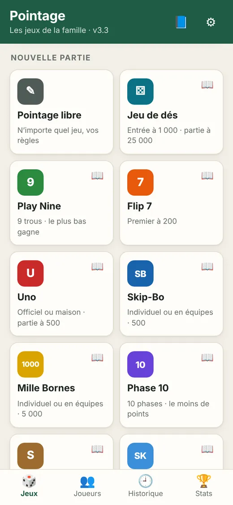
3Les joueurs
L’onglet Joueurs contient la liste permanente de la famille. Inscrivez chaque personne une fois ; ensuite, il suffira de toucher son nom au début d’une partie.
- Ajouter : tapez le nom et touchez Ajouter.
- Renommer : le nom change aussi dans l’historique.
- Couleur : touchez le rond de couleur pour passer à la couleur suivante.
- ↑ : remonte un joueur dans la liste.
- ✕ : retire le joueur de la liste ; ses parties restent dans l’historique.
Un visiteur peut jouer sans être inscrit : voyez « invité » à la section suivante.
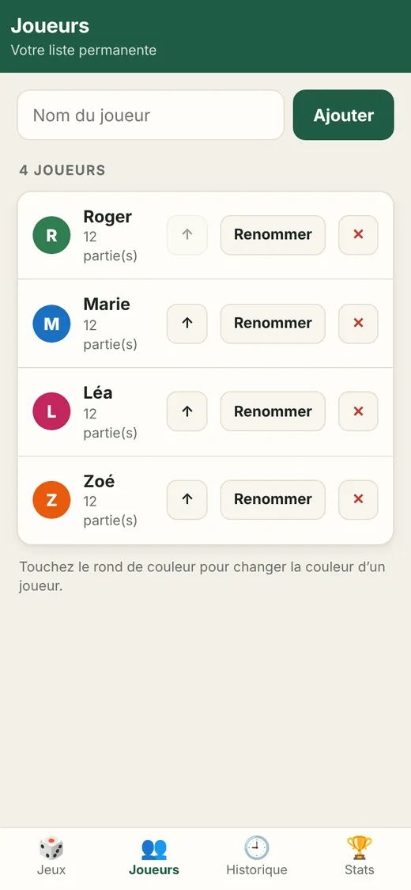
4Commencer une partie
- Touchez la tuile du jeu sur l’accueil.
- Qui joue ? Touchez les joueurs dans l’ordre du jeu : le numéro dans le rond indique l’ordre. Touchez de nouveau pour retirer quelqu’un.
- Invité : tapez un nom puis + Invité (sans profil). À la fin de la partie, l’app proposera de l’ajouter à votre liste. + À ma liste l’inscrit tout de suite.
- Premier à brasser : touchez le joueur qui brasse la première manche.
- Options selon le jeu : pointage visé, façon de compter au Uno, jeu individuel ou en équipes au Skip-Bo et au Mille Bornes, mode du Scrabble, valeurs du jeu de dés, etc.
- Touchez Commencer.
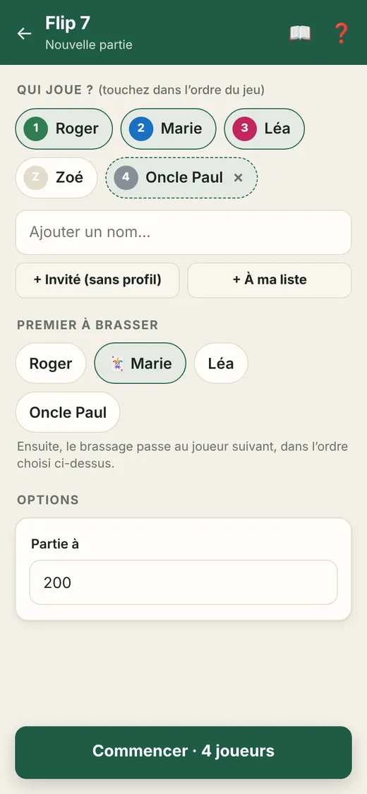
5La feuille de pointage
En haut, une case par joueur montre son total et son rang (★ pour le meneur). Dessous, le tableau des manches.
Quand un joueur atteint le pointage visé, un bandeau 🏁 l’annonce : touchez Terminer pour voir le résultat. Vous pouvez aussi terminer à tout moment par le menu ⋮.
Dans la barre du haut : ↶ ↷ (annuler / rétablir), 📖 (règles du jeu), Ludo (poser une question à Ludo sur ce jeu) et ⋮ (menu).
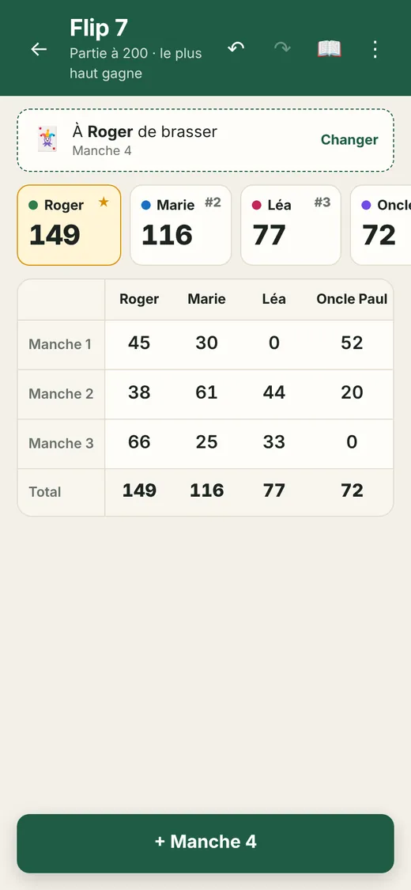
Inscrire une manche
- Touchez le bouton du bas + Manche.
- Inscrivez les points de chaque joueur. La touche ± rend un nombre négatif. La touche Entrée du clavier passe au joueur suivant.
- Pour plusieurs jeux, la calculatrice 🧮 à côté d’un joueur calcule les points à partir des cartes (voir chaque jeu).
- Touchez Enregistrer.
Corriger une manche : touchez n’importe quelle case du tableau. Le bouton Supprimer retire toute la manche.
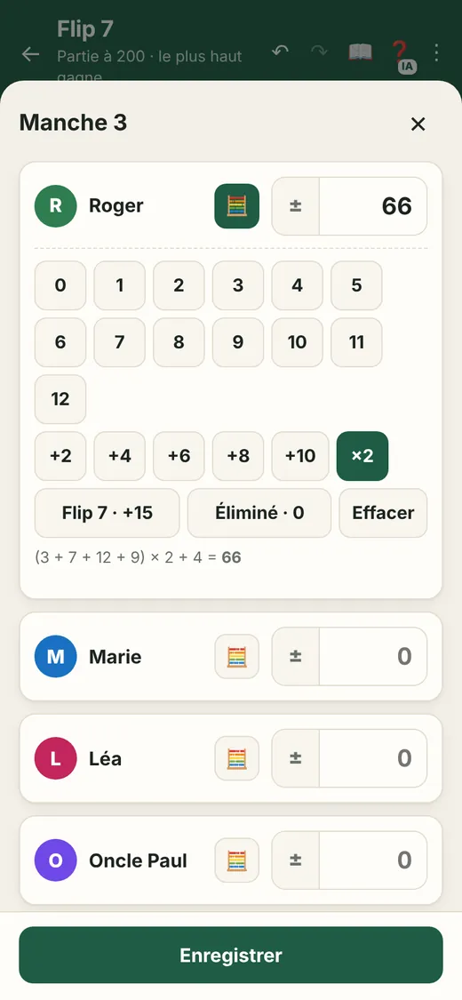
Le brasseur
Le bandeau 🃏 en haut de la feuille indique à qui c’est de brasser. Après chaque manche enregistrée, l’app le rappelle et passe au joueur suivant, dans l’ordre de départ.
On s’est trompé ? Touchez Changer et choisissez le bon joueur : la suite repart de lui.
Annonce à voix haute : le haut-parleur au bout du bandeau active ou coupe l’annonce. Activée (🔊), le téléphone qui tient la feuille dit à voix haute, dès qu’une manche est enregistrée, à qui c’est de brasser (« Manche 3 : c’est à Marie de brasser. »). Coupée (haut-parleur barré), il reste muet. Touchez-le à n’importe quel moment de la partie pour passer de l’un à l’autre ; le choix est gardé sur ce téléphone pour les prochaines parties.
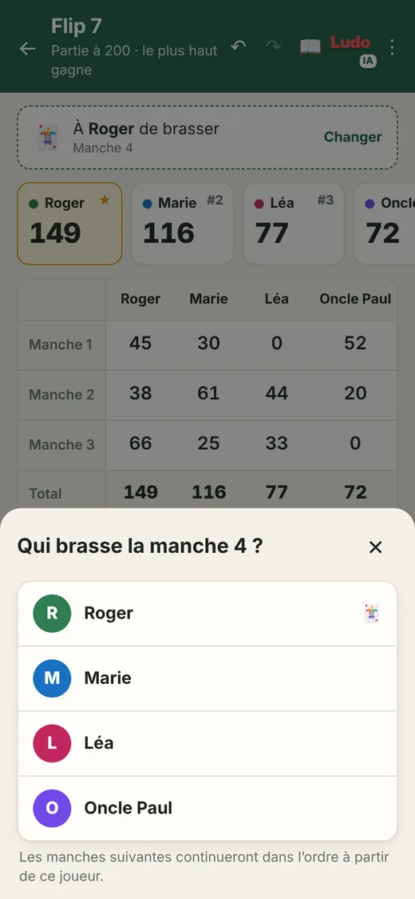
Le menu ⋮ d’une partie
- Terminer ou Rouvrir la partie.
- Supprimer la dernière manche.
- Ajouter un joueur en cours de partie.
- Revanche : nouvelle partie avec les mêmes joueurs.
- Évolution des scores : le graphique.
- Partager la partie en direct : les autres joueurs suivent les pointages sur leur téléphone (voir Partie en direct).
- Poser une question à Ludo et Analyse de la partie par Ludo (voir Ludo).
- Signaler un problème / suggérer (voir Rapports).
- Supprimer cette partie, définitivement.
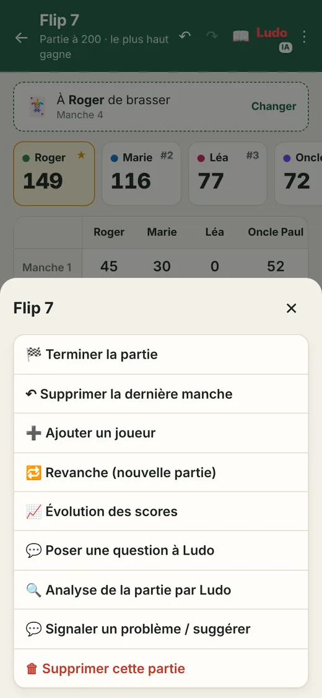
Partie en direct : suivre et inscrire ses points
Pendant une partie, les autres joueurs peuvent suivre les pointages sur leur propre téléphone, en direct : classement, feuille, graphique et brasseur.
- Sur le téléphone qui tient la feuille, touchez l’icône réseau (trois petites boîtes reliées) en haut de la partie, ou menu ⋮ → 📡 Partager la partie en direct. Un code QR apparaît. Pendant le partage, l’icône devient verte, avec un point.
- Les autres joueurs scannent le code avec l’appareil photo de leur téléphone et touchent le lien. La partie s’ouvre dans le navigateur : pas besoin d’avoir l’app. Vous pouvez aussi toucher Envoyer le lien (texto, Messenger…).
- Leur page se met à jour toute seule, quelques secondes après chaque changement. Ils voient la partie en lecture seule : seul le téléphone qui tient la feuille peut la modifier.
La page de suivi donne aussi ce qui compte dans chaque jeu : au Phase 10, la phase où chacun est rendu (elle compte avant les points) ; au jeu de dés, qui est entré et qui ne l’est pas encore, et qui est dans la zone de pénalité ; au Wizard, les mises et les plis ; au Train mexicain, le double de départ ; à l’Acquire, les chaînes sur le plateau (les actions restent secrètes).
Chacun inscrit ses points sur son téléphone : au Pointage libre, Flip 7, Play Nine, Skyjo, Phase 10, Train mexicain, Wizard, Yahtzee, Uno (règle maison), Skip-Bo et Mille Bornes. Aux jeux qui se jouent chacun son tour (Scrabble, jeu de dés, Triomino), chacun joue son tour sur son téléphone (voir plus bas).
- Sur la page de suivi, touchez votre nom (« Qui êtes-vous ? »). Le téléphone s’en souvient ; Changer permet d’en choisir un autre.
- À la fin de la manche, inscrivez vos points et touchez Envoyer. Selon le jeu, cochez aussi « J’ai réussi ma phase » (Phase 10), « J’ai retourné toutes mes cartes en premier » (Skyjo) ou « J’ai posé tous mes dominos » (Train). Celui qui termine la manche au Phase 10 ou au Uno coche simplement « J’ai terminé la manche » : 0 point, sans rien taper (au Phase 10, sa phase est aussi réussie). Au Wizard, choisissez votre mise, puis vos plis ; au Yahtzee, touchez la case où inscrire votre lancer.
- Sur le téléphone qui tient la feuille, une bande 📥 montre les points reçus et ceux qu’on attend. Quand tous les autres ont envoyé, la fenêtre de saisie s’ouvre toute seule, déjà remplie, le curseur dans votre case : inscrivez vos points, vérifiez, puis Enregistrer. Le bouton Inscrire l’ouvre plus tôt, par exemple pour inscrire les points d’un joueur sans téléphone.
Skip-Bo : chacun inscrit les cartes restantes dans son talon, ou coche « J’ai vidé mon talon : je gagne la manche ». La feuille calcule 25 + 5 par carte restante pour le gagnant. En équipes, un seul téléphone par équipe (comme au Mille Bornes) : il inscrit les cartes restantes de chaque membre, ou coche « Un de nous a vidé son talon ».
Mille Bornes en équipes : un seul téléphone par équipe. Sous « Qui saisit pour votre équipe ? », un membre touche son équipe ; l’autre touche « Je regarde seulement ». À la fin de la manche, 🧮 Ouvrir le calculateur donne le même calculateur que sur la feuille (bornes, bottes, coups fourrés…), puis Envoyer. Le capot et les primes qui dépendent des autres équipes sont calculés par la feuille, quand tout le monde a envoyé.
Scrabble, jeu de dés et Triomino : quand c’est votre tour, votre téléphone affiche le même outil que la feuille : tapez votre mot et touchez les cases bonus, touchez vos dés puis encaissez, ou touchez les chiffres de votre pièce. Quand vous validez, le tour est envoyé et la feuille passe au joueur suivant ; un message confirme « Votre tour est inscrit ». Si la feuille a changé entre-temps (par exemple, le tour a déjà été inscrit sur le téléphone maître), votre envoi est refusé et un message vous le dit : rien n’est inscrit en double. La fin de partie du Scrabble (lettres restantes) et la fin de manche du Triomino se font sur le téléphone qui tient la feuille.
Qui tient la feuille ? Dans la fenêtre du code QR, touchez votre nom (ou « Je ne joue pas »). Votre téléphone sait alors qu’il n’a pas à attendre vos points, et votre nom n’est pas offert aux autres joueurs.
C’est toujours le téléphone qui tient la feuille qui enregistre : il garde le dernier mot. Un joueur peut corriger et renvoyer ses points tant que la manche n’est pas enregistrée. S’il manque des points au moment d’enregistrer, un avertissement le dit ; touchez Enregistrer encore pour enregistrer quand même. Les points qui arrivent ensuite sont ajoutés à la manche si la case du joueur était restée vide (un message le confirme) ; sinon, touchez la manche pour corriger. Au Yahtzee, la case est inscrite dès qu’elle arrive.
Pendant le partage, une bande verte Partie en direct s’affiche sous le titre de la partie ; son bouton Code QR réaffiche le code pour un joueur qui arrive. Arrêter le partage coupe l’accès.
Reprendre une partie plus tard : sur le téléphone qui tient la feuille, la partie reste dans « Parties en cours » ; dès qu’on la rouvre, le partage repart, avec le même code QR. Les autres joueurs la retrouvent sur l’accueil de l’app (ou de l’app web), sous Parties en direct suivies : un toucher, et la partie se rouvre, sans rescanner le code. Leur nom est gardé. Une partie suivie disparaît de cette liste après 4 jours sans nouvelles, ou avec ✕.
Garder la partie : à la fin, sur la page de suivi, 💾 Garder cette partie dans mon historique en ajoute une copie à votre historique et à vos statistiques (vos joueurs sont reconnus par leur nom). Si votre appareil est relié au téléphone qui tient la feuille, la partie y est déjà : la page l’indique et rien n’est copié en double.
Ouvrir dans l’app : le code QR ouvre la partie dans le navigateur. Sur Android, si l’app Pointage est installée, le bouton 📱 Ouvrir dans l’app Pointage de la page de suivi l’ouvre dans l’app. Le navigateur suffit aussi : c’est la même app. Seules différences : la commande vocale des dés est plus fiable dans l’app, et le navigateur peut mettre la page en veille quand l’écran s’éteint (elle se remet à jour dès qu’on rallume l’écran).
Vie privée : seule cette partie est partagée, jamais vos autres parties, vos joueurs, vos statistiques ou vos règles maison. Elle est chiffrée de bout en bout : la clé est dans le code QR et ne passe jamais par le serveur, qui ne voit qu’un texte illisible et l’efface 3 jours plus tard. Le partage demande Internet ; sans connexion, la partie continue normalement et les autres reçoivent les changements au retour d’Internet.
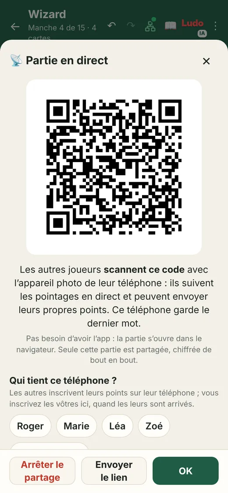
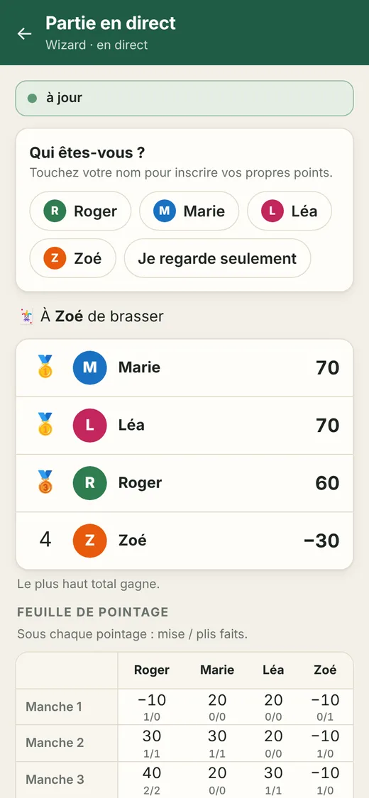
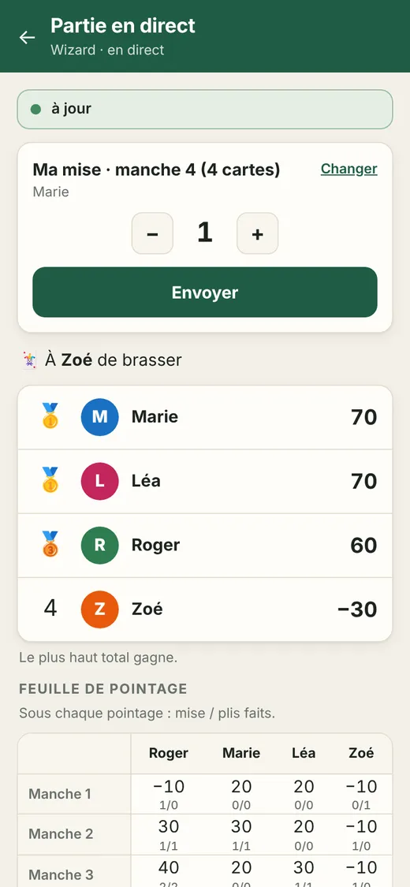
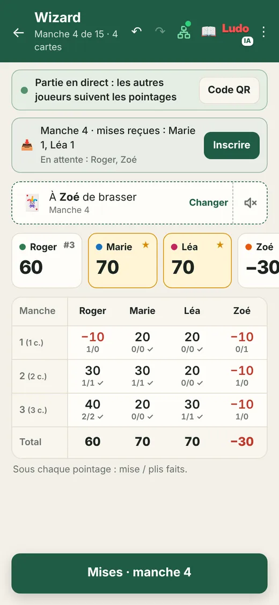
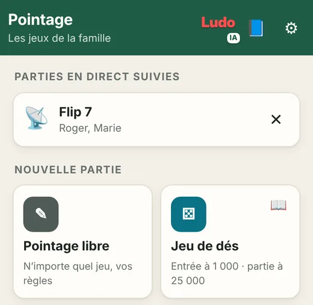
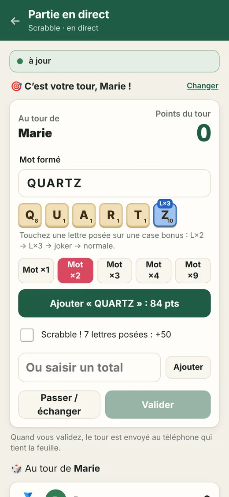
6Annuler / rétablir
Les flèches ↶ (annuler) et ↷ (rétablir), en haut de chaque feuille de pointage, défont ou refont n’importe quelle action de la partie : manche saisie ou modifiée, tour de dés, points ajoutés au tour, marqueur de Phase 10, couleur, brasseur, fin de partie.
On peut remonter jusqu’à 60 actions. L’historique d’annulation est gardé tant que l’app reste ouverte.
7Les jeux
Chaque jeu a sa feuille adaptée. Le résumé des règles est toujours à portée de main avec 📖.
Pointage libre
Pour n’importe quel jeu. À la préparation : le nom du jeu (l’app retient les noms déjà utilisés), qui gagne (le plus haut ou le plus bas pointage) et un pointage visé facultatif. On inscrit ensuite les points manche par manche. Les règles maison de chaque jeu libre sont gardées séparément.
Play Nine
La feuille reprend la carte officielle : 9 trous, un sous-total après chaque trou, et l’écart avec le meneur dans la case de chaque joueur. Le plus bas gagne. Jusqu’à 6 joueurs tiennent à l’écran.
Calculatrice des 8 cartes (🧮) : touchez une carte de la grille, puis sa valeur. Les colonnes identiques s’annulent, une paire de −5 vaut −10, et les bonus de colonnes appariées (−10, −15, −20) s’ajoutent seuls.
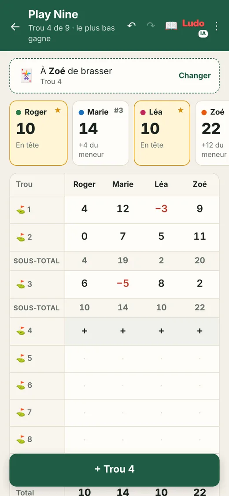
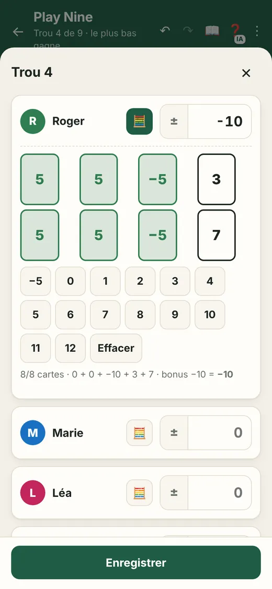
Flip 7
Premier à 200. La calculatrice 🧮 (image de la section Inscrire une manche) : touchez les cartes chiffres du joueur, la carte ×2 et les modificateurs +2 à +10. Le bonus Flip 7 (+15) s’active seul à 7 chiffres différents ; Éliminé met le joueur à 0. Un doublon est signalé.
Uno
À la préparation de la partie, choisissez la façon de compter :
- Officielle : quand un joueur n’a plus de cartes, il marque la valeur des cartes qui restent chez les autres. Le premier à 500 gagne. À la saisie, touchez qui n’a plus de cartes, puis inscrivez la valeur des cartes de chaque autre joueur : l’app additionne le tout pour le gagnant de la manche (🏁 dans le tableau).
- Maison : chacun compte les cartes qui lui restent et les ajoute à son propre total. Quand quelqu’un atteint 500, le plus bas gagne.
Dans les deux cas, la calculatrice 🧮 ajoute la valeur de chaque carte touchée : chiffres, 20 pour +2 / Inversion / Passe, 50 pour les jokers. L’app retient le dernier choix pour la partie suivante.
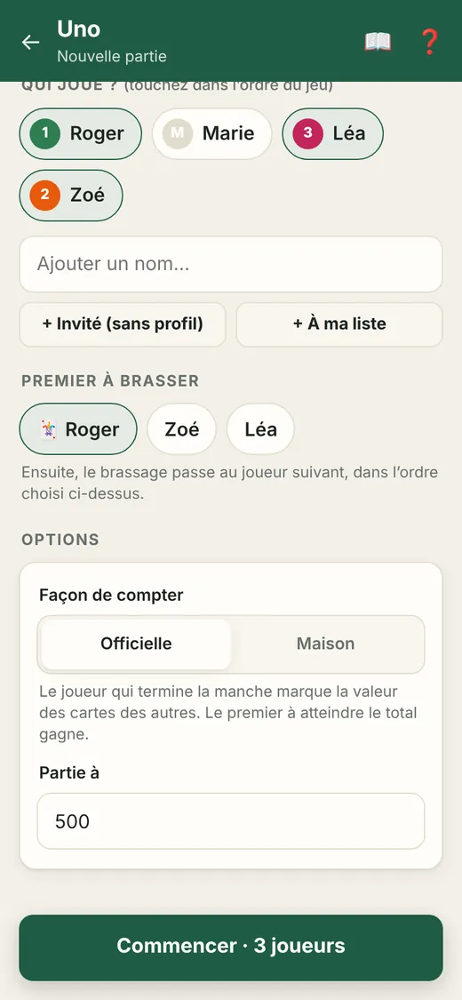
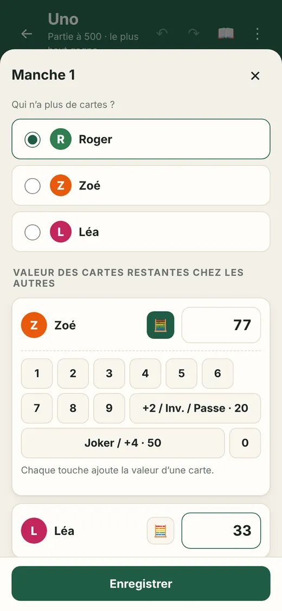
Skip-Bo
À la préparation, choisissez la façon de jouer :
- Individuel : à la saisie, choisissez qui a vidé son talon, puis inscrivez les cartes restantes dans le talon des autres. Le gagnant reçoit 25 points + 5 par carte restante, calculés automatiquement. Dans le tableau, un drapeau 🏁 marque le joueur qui a vidé son talon.
- En équipes : choisissez 2 ou 3 équipes, puis touchez A, B (ou C) à côté de chaque joueur pour former les équipes. Par défaut, l’app alterne selon l’ordre choisi, ce qui place les partenaires face à face. À la saisie, choisissez l’équipe qui a gagné la manche, puis inscrivez les cartes restantes de chaque joueur adverse : l’équipe gagnante reçoit 25 + 5 par carte. Le drapeau 🏁 marque alors l’équipe qui a gagné la manche.
En équipes, le pointage, le classement et le graphique se font par équipe ; le brasseur tourne quand même d’un joueur à l’autre. À la fin, chaque membre de l’équipe gagnante reçoit la victoire dans les statistiques. La revanche garde les mêmes équipes. Premier à 500.
En partie en direct, chacun peut inscrire ses cartes restantes sur son téléphone (en équipes : un téléphone par équipe).
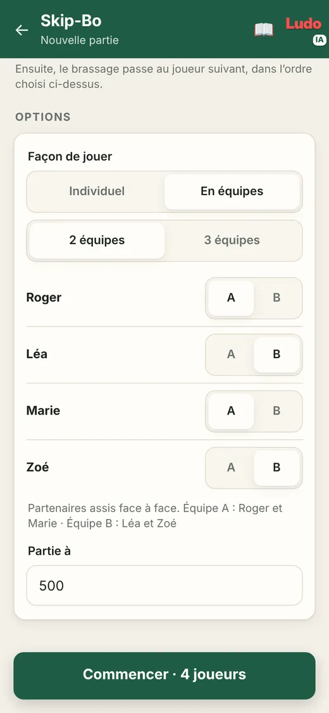
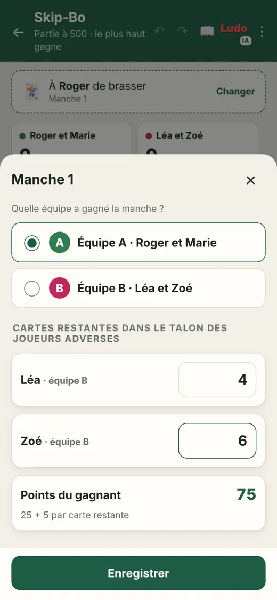
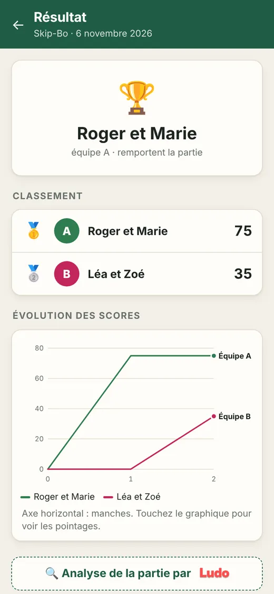
Mille Bornes
À la préparation, choisissez Individuel ou En équipes. En équipes (deux équipes à 4 joueurs, trois à 6), touchez A, B ou C à côté de chaque joueur, comme au Skip-Bo : les partenaires partagent un seul jeu sur la table, et tout se compte par équipe.
Saisie par cartes : un onglet par joueur (ou par équipe) en haut, avec son total, et Joueur suivant › (ou Équipe suivante ›) pour passer au prochain.
- Bornes : le nombre de cartes de chaque valeur (deux cartes 200 au maximum).
- Bottes jouées, puis combien étaient des coups fourrés.
- Primes AUTO : les 4 bottes, la manche terminée (1 000 km), sans les 200 et le capot se cochent seuls selon les cartes. Touchez-en une pour forcer l’inverse.
- Allonge et retardement se cochent à la main.
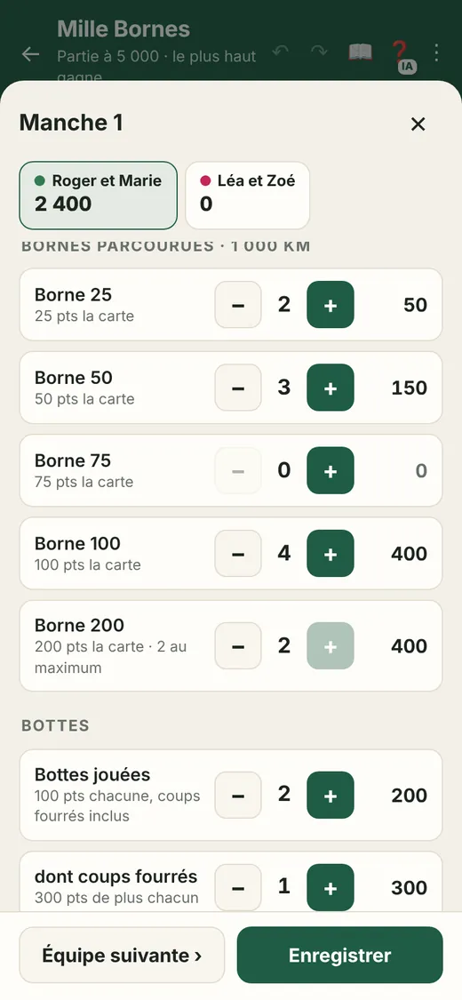
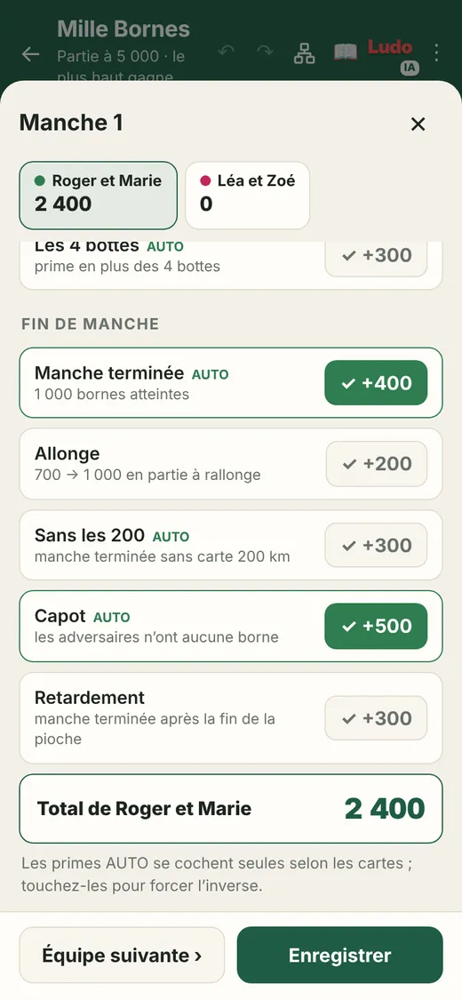
Phase 10
Le tableau de progression montre les 10 phases (lignes) et une colonne par joueur, dans sa couleur :
- le gros cercle plein montre où le joueur est rendu : « Départ » en début de partie, puis la dernière phase réussie ;
- le cercle pointillé montre son objectif : la phase à réussir ;
- les petits points montrent le chemin parcouru : les phases déjà réussies.
- Couleur : touchez le carré en haut d’une colonne et choisissez parmi 16 couleurs (si elle est prise, les deux joueurs échangent).
- Phase réussie : touchez le cercle pointillé du joueur. Son cercle plein vient s’y placer, et le cercle pointillé passe à la phase suivante. Pour corriger, touchez une autre case de sa colonne (« Départ » le remet au début).
- Voir l’objectif : touchez le marqueur d’un joueur. Une fenêtre montre la phase à réussir avec un exemple de cartes et un bouton Phase réussie ›.
- Les points s’inscrivent comme d’habitude avec + Manche. Le classement tient compte d’abord de la phase, puis des points.
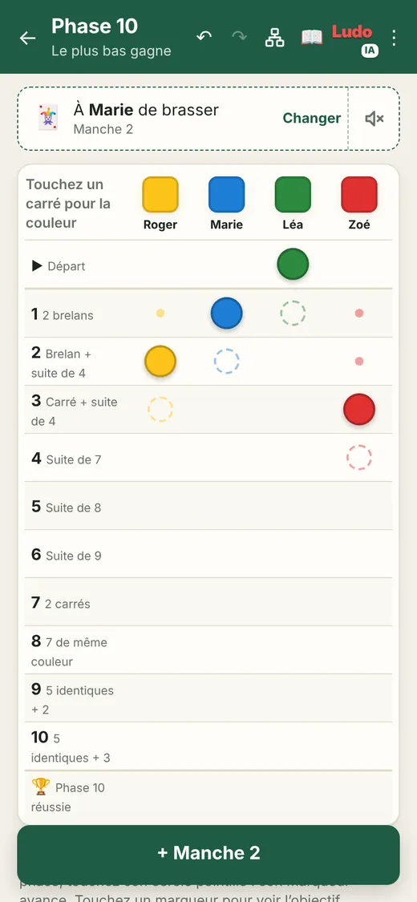
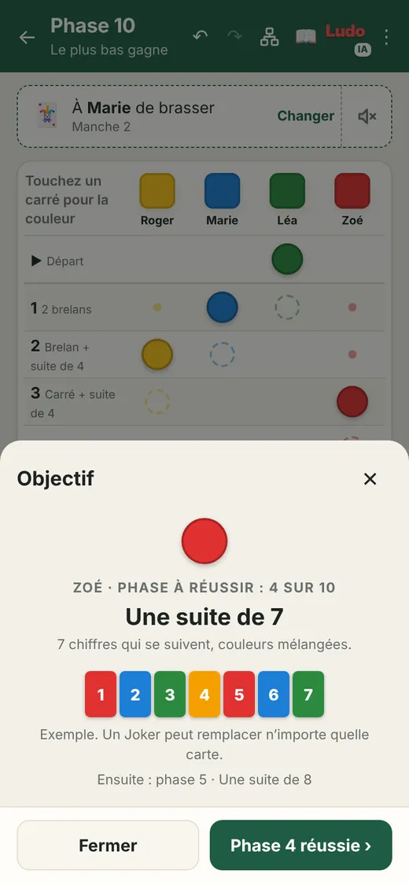
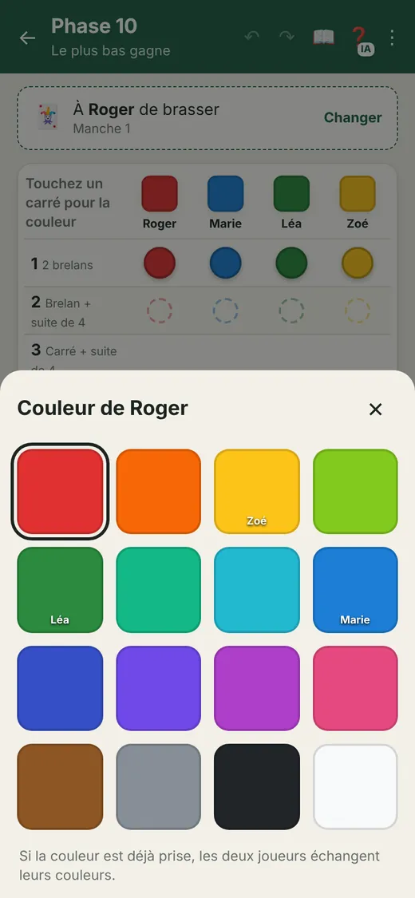
Scrabble
À la préparation, choisissez la feuille de pointage :
- Calculateur de mots : tapez le mot ; il s’affiche en tuiles avec la valeur de chaque lettre (édition française, accents ignorés). Touchez une lettre posée sur une case bonus : L×2 → L×3 → joker → normale. Choisissez le multiplicateur du mot (×2, ×3, ou ×4 et ×9 pour deux cases), puis Ajouter. Ajoutez ainsi chaque mot formé pendant le tour.
- Saisie simple : chacun calcule ses mots et inscrit le total de son tour.
Dans les deux cas : la case Scrabble ! +50 quand on pose ses 7 lettres, Passer / échanger pour 0 point, et Valider. L’app passe ensuite au joueur suivant.
Fin de partie 🏁 : tapez les lettres qui restent à chacun. L’app retire leur valeur et la donne à celui qui a vidé son chevalet.
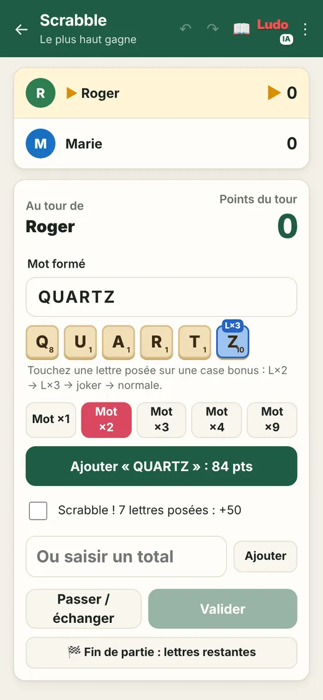
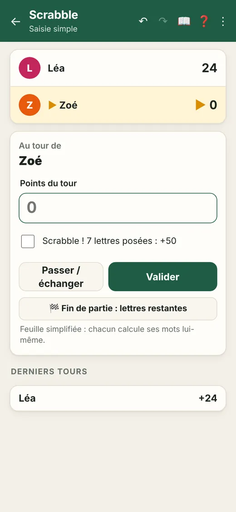
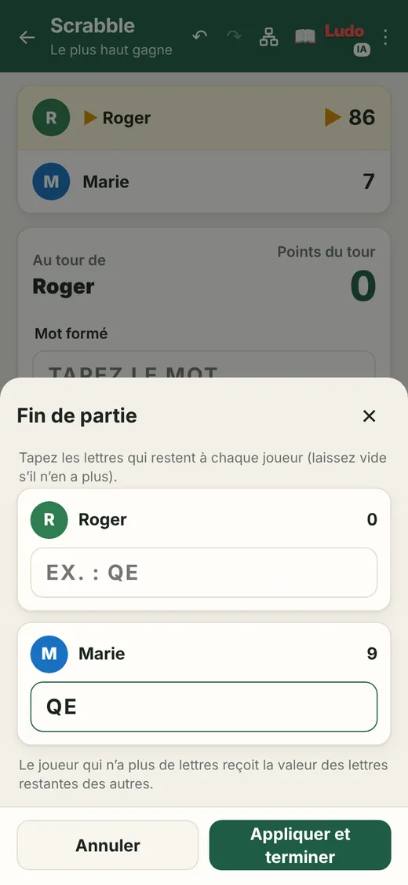
Skyjo
Partie à 100 ; le plus bas total gagne. À chaque manche :
- Touchez qui a retourné toutes ses cartes en premier.
- Inscrivez le total des cartes de chaque joueur, sans doubler. La calculatrice 🧮 reproduit la grille de 12 cartes (3 rangées × 4 colonnes) : touchez une carte puis sa valeur (−2 à 12). Une colonne de trois cartes identiques est retirée automatiquement.
- Enregistrer : si celui qui a terminé n’a pas strictement le plus bas pointage, l’app double le sien (seulement s’il est positif). Le tableau l’indique par « ×2 » ; sinon, un 🏁 marque celui qui a terminé.
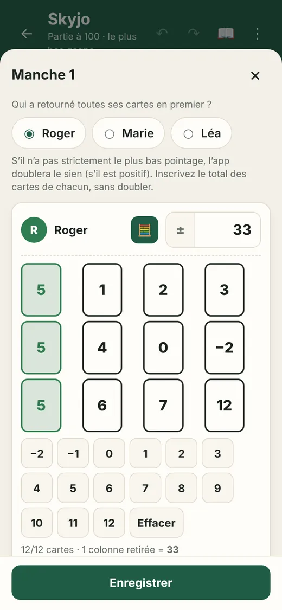
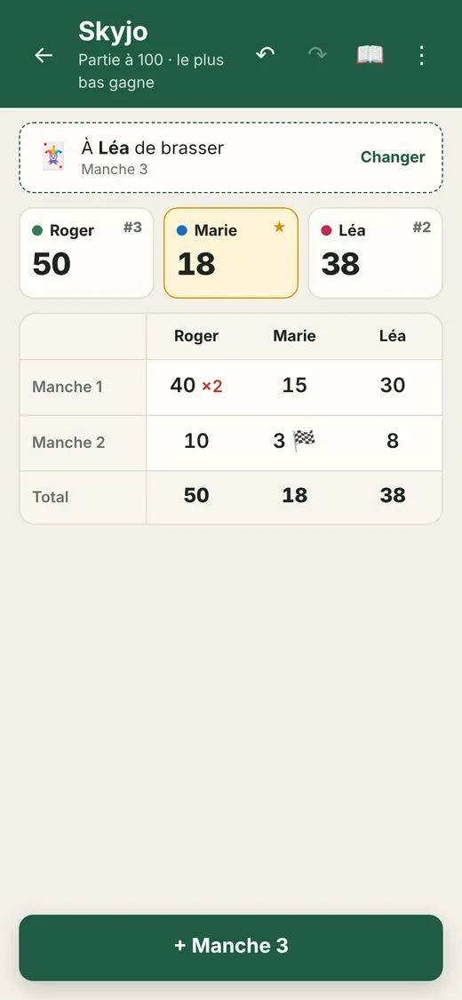
Wizard
De 3 à 6 joueurs. La partie compte 60 ÷ nombre de joueurs manches (15 à 4 joueurs) : 1 carte à la première manche, 2 à la deuxième, et ainsi de suite. Le plus haut total gagne.
Au début, vous pouvez cocher la règle maison : le total des mises ne doit pas égaler le nombre de cartes (quelqu’un est sûr de rater).
Chaque manche se fait en deux temps avec le gros bouton du bas :
- Mises · manche N : avant de jouer, inscrivez avec − et + le nombre de plis que chacun prévoit faire, puis Enregistrer les mises. Elles s’affichent sous chaque nom pendant la manche.
- Plis faits · manche N : après la manche, ajustez le nombre de plis réellement faits (au départ, l’app propose la mise). Le total doit égaler le nombre de cartes.
Pointage : mise réussie = 20 points + 10 par pli ; mise ratée = −10 par pli d’écart. Dans le tableau, chaque case montre « mise / plis » et un ✓ quand c’est réussi. Touchez une manche pour la corriger.
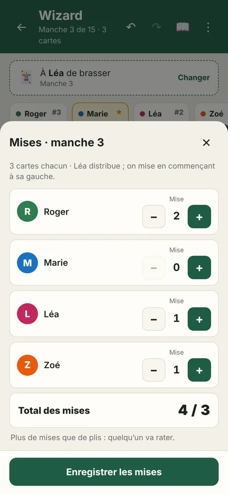
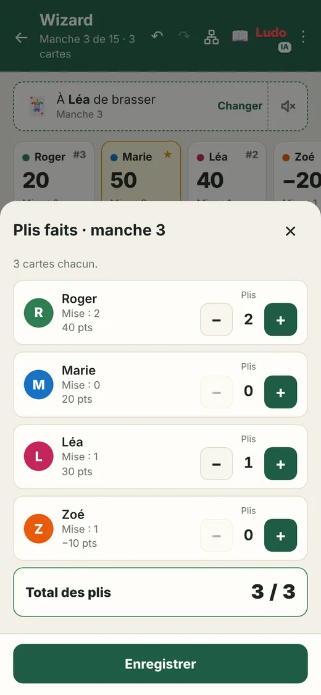
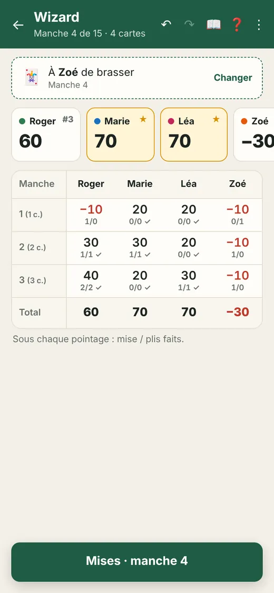
Train mexicain
À la préparation, choisissez le jeu de dominos (double-9, double-12 ou double-15) : 13 manches en double-12, du double 12 au double blanc. Cochez au besoin la variante « le double blanc vaut 50 ». Le titre de la feuille indique toujours la manche et son double de départ.
- À la fin de la manche, touchez + Manche.
- Pour celui qui a posé tous ses dominos, cochez A tout posé : il marque 0 (🏁 dans le tableau) et l’app passe au joueur suivant.
- Pour chacun des autres, touchez les 2 moitiés de chaque domino qui lui reste : l’app les montre et fait le total. Touchez un domino ajouté pour le retirer. Vous pouvez aussi taper directement le total.
- Enregistrer. Touchez une manche dans le tableau pour la corriger ou la supprimer.
Le plus bas total gagne quand toutes les manches sont jouées.
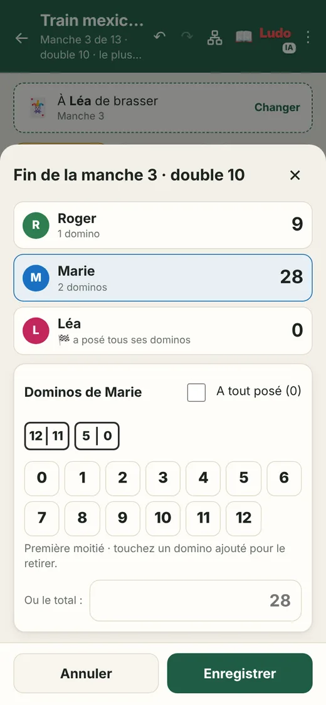
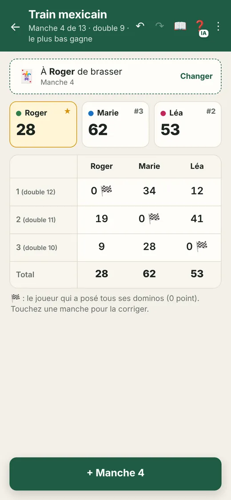
Triomino
Partie à 400 (modifiable). L’app calcule les points selon les règles officielles. À la préparation, vous pouvez cocher la variante du bonus du triple de départ (+10 ; triple 0 = 40).
- C’est au joueur marqué ▶ : touchez les 3 chiffres de la pièce posée (le triangle les montre) ; l’app fait la somme.
- Ajoutez au besoin la figure (hexagone +50, double +60, triple +70), le pont (+40) et les pièces piochées (−5 chacune). Après 3 pioches, cochez « Ne peut toujours pas jouer » : −25 en tout, sans pièce.
- Inscrire ajoute les points et passe au joueur suivant. Passer sert quand la pioche est vide.
- 🏁 Fin de manche : choisissez qui a posé sa dernière pièce et inscrivez la somme des chiffres des pièces qui restent aux autres : il reçoit 25 + cette somme. Si plus personne ne peut jouer, choisissez « manche bloquée » : chacun perd la somme de ses pièces restantes.
Quand quelqu’un dépasse 400, un bandeau le signale : on termine la manche, puis le plus haut total gagne. « Annuler » dans la liste des tours retire le dernier tour (ou toute la fin de manche).
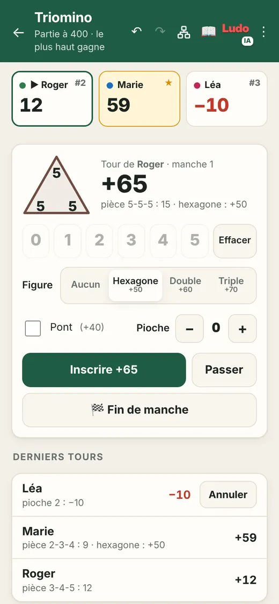
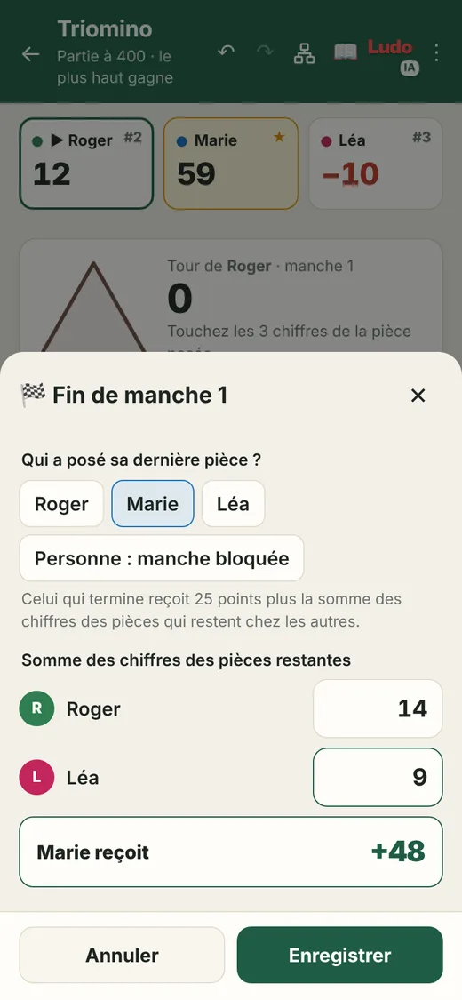
Yahtzee
Une feuille très tactile, pour autant de joueurs que vous voulez. Le bandeau du haut montre le total de chacun (▶ : c’est son tour ; ★ : en tête ; « 3/13 » : cases remplies). Il reste visible en défilant ; touchez un joueur pour voir sa feuille.
- Touchez les 5 dés obtenus : les petites faces sous les dés ajoutent un dé à la fois, et toucher un dé change sa valeur. Effacer recommence.
- Chaque case vide affiche alors les points possibles (en vert, ou 0 en rouge). Touchez la case choisie : les points sont inscrits et c’est au tour du joueur suivant. Une case à 0 demande de confirmer pour la rayer.
- Sans entrer les dés, touchez directement une case : choisissez le nombre de dés (section supérieure), « Réussi » ou « Rayé » (full, suites, Yahtzee), ou tapez le total (brelan, carré, chance). Touchez une case remplie pour la corriger ou l’effacer.
La barre de la section supérieure montre le chemin vers la prime de 35 (63 points). Un Yahtzee de plus, quand la case Yahtzee vaut déjà 50, ajoute 100 points et sert de joker (full 25, suites 30 et 40). En bas : le détail du total, et 📋 Feuille complète montre la feuille de tous les joueurs côte à côte.
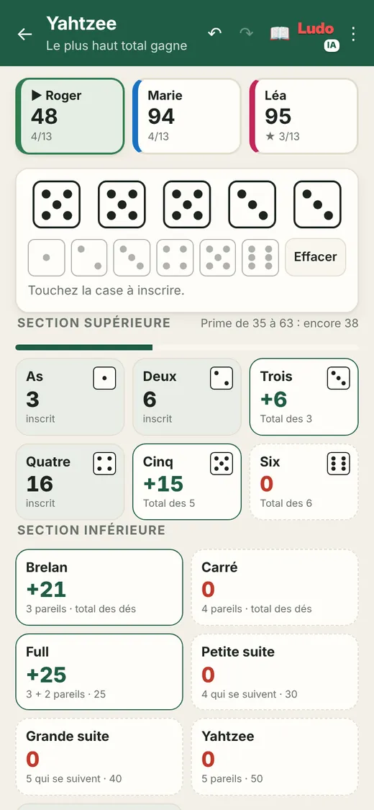
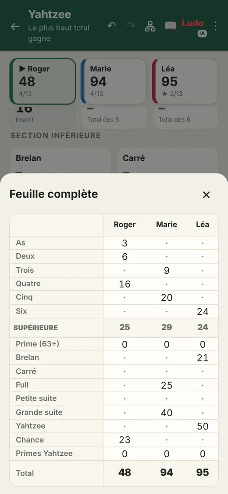
Acquire
Acquire n’a pas de manches : on garde l’argent papier, et l’app suit les 7 chaînes d’hôtels et les actions de chacun, calcule les fusions et fait le pointage final. À la préparation, choisissez l’édition écrite sur votre boîte (classique, récente 2016 ou Hasbro 2016) : les noms des chaînes et leur gamme de prix en dépendent. De 2 à 6 joueurs.
- Taille des chaînes : chaque carte a − et + (ou touchez le nombre pour l’écrire). Le premier + fonde la chaîne (2 tuiles) et l’app demande qui l’a fondée, pour lui donner son action gratuite. La carte montre le prix de l’action, les primes (majoritaire / minoritaire), les actions qui restent à la banque et « Sûre » à 11 tuiles.
- Actions : touchez un joueur dans le tableau pour ajuster ses actions après un achat. La colonne « Valeur » donne ses actions au prix du moment (sans l’argent papier).
- 🔀 Fusion : choisissez la chaîne qui disparaît et celle qui l’absorbe. L’app affiche les primes à payer (avec les égalités), puis, pour chaque actionnaire, combien il vend ou échange (2 contre 1) ; il garde le reste. Elle indique ce que chacun doit recevoir de la banque. Appliquer la fusion met les tailles et les actions à jour ; la liste « Fusions » garde l’historique.
- 📋 Tableau des prix : le tableau complet de l’édition choisie.
- 🏁 Pointage final : inscrivez l’argent papier de chacun. L’app ajoute les primes de toutes les chaînes actives et la vente de toutes les actions, puis le plus riche gagne. Un bandeau rappelle quand la fin peut être déclarée (une chaîne de 41 tuiles, ou toutes les chaînes sûres).
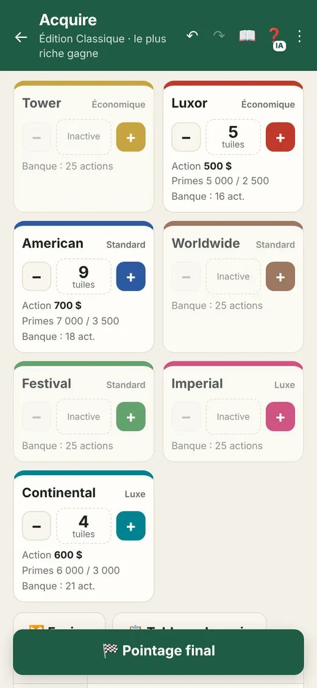
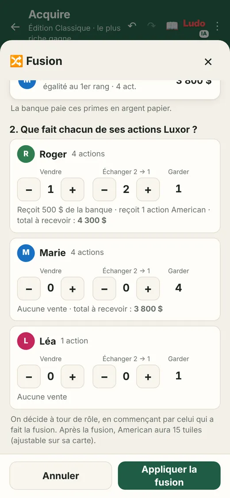
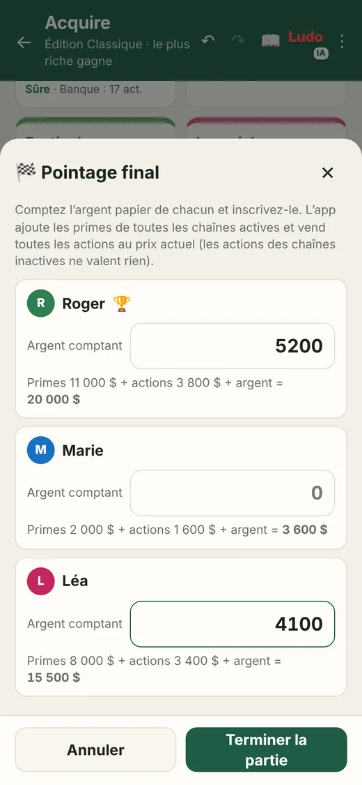
Jeu de dés (10 000)
Le joueur dont c’est le tour est mis en évidence. Après chaque lancer :
- Touchez les dés gardés : l’app affiche leur valeur. Touchez un dé du plateau pour le retirer.
- Ajouter au tour cumule ces points ; relancez et recommencez.
- Encaisser ajoute les points du tour au total et passe au joueur suivant.
- 💥 Raté : aucun dé ne compte, les points du tour sont perdus.
| Règle maison | Ce que fait l’app |
|---|---|
| Entrer à 1 000 | Il faut 1 000 points en un seul tour pour commencer à accumuler. L’étiquette « pas entré » le rappelle. |
| Objectif exact | Il faut arriver pile à l’objectif (25 000). Si des points font dépasser, le tour s’arrête sans gain ni perte. |
| Zone de pénalité | À partir de 20 000, un raté coûte 1 000, seulement si aucun dé n’a compté pendant le tour. |
| Six dés identiques | Victoire immédiate, peu importe le pointage. |
Les valeurs (objectif, entrée, pénalité, suite, trois paires) se règlent dans Valeurs et règles à la préparation.
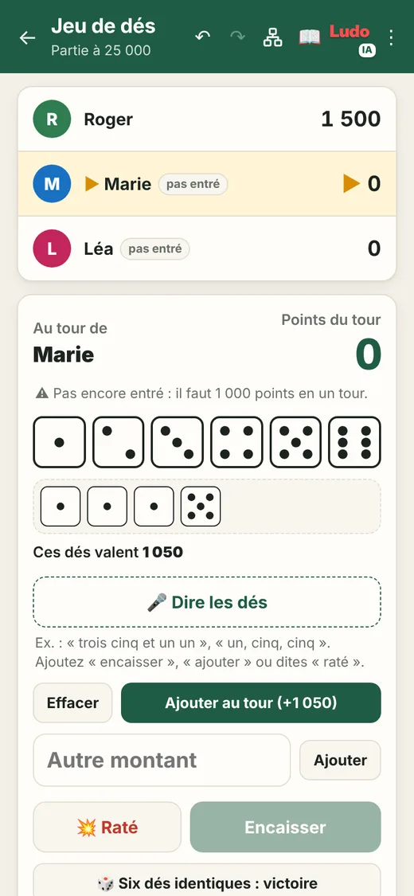
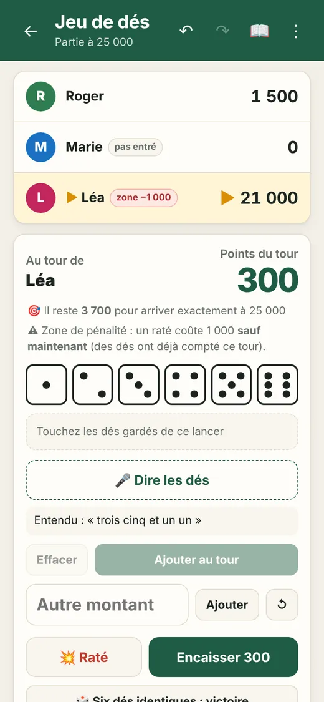
Commande vocale (jeu de dés)
Touchez 🎤 Dire les dés et parlez :
- « trois cinq et un un » → trois 5 et un 1
- « un, cinq, cinq » → un 1 et deux 5 (trois mots ou plus = une liste)
- « un cinq » veut dire un 5 ; pour un 1 et un 5, dites « un et cinq ».
Ce que l’app a compris s’affiche, et les dés vont dans le plateau. Terminez la phrase par « ajouter » ou « encaisser » pour agir tout de suite, ou dites simplement « raté ».
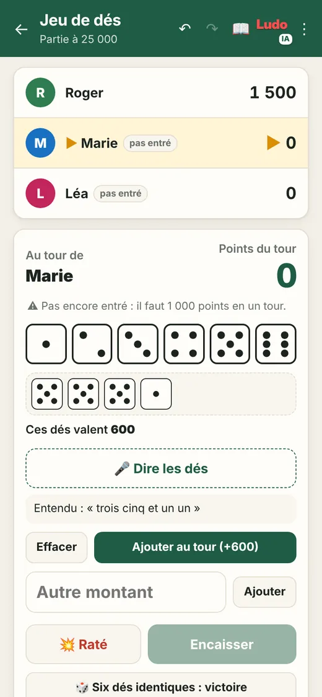
8Règles et règles maison
Le bouton 📖 (sur l’accueil ou dans une partie) ouvre un résumé des règles du jeu : mise en place, déroulement et pointage.
Sous le résumé, Nos règles maison est un espace libre pour noter vos variantes. Il est enregistré automatiquement, jeu par jeu.
Chercher les règles officielles ouvre une recherche sur Internet.
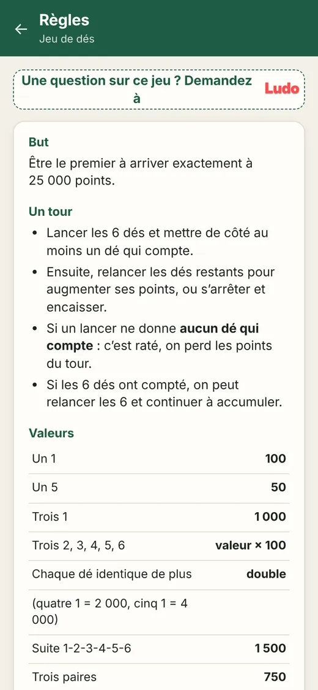
Ludo, l’assistant : poser une question
Ludo est l’assistant de l’app : il répond aux questions sur les règles des jeux et sur l’utilisation de Pointage. Pour l’ouvrir : le bouton rouge Ludo en haut de l’accueil ou en haut de chaque partie (une petite étiquette IA l’accompagne quand l’IA est disponible ; sans connexion, elle disparaît et Ludo répond en mode hors ligne), le menu ⋮ d’une partie, ou le bouton en haut du résumé des règles. Ouvert depuis une partie, il sait de quel jeu il s’agit (touchez ✕ pour une question générale).
- Touchez 🎤 Poser une question à Ludo et parlez naturellement : « au Wizard, j’ai misé 2 et fait 4 plis, combien j’ai ? », « comment je corrige une manche ? ». Vous pouvez aussi l’écrire, puis Demander.
- Avec Internet, Ludo répond grâce à une IA (« Ludo réfléchit… », quelques secondes). Il connaît le jeu en cours, vos règles maison (elles passent en premier), le résumé des règles de l’app et tout ce manuel ; au besoin, il vérifie les règles officielles sur Internet et indique ses sources. Il sait aussi faire les calculs de points.
- Si vous avez parlé, la réponse est lue à voix haute, avec une voix naturelle quand il y a Internet (voir Voix de Ludo). 🔊 Lire à voix haute la relit ; ⏹ Arrêter la lecture l’interrompt.
- Vous pouvez enchaîner avec une question de suivi (« et si j’avais fait 2 plis ? ») : Ludo se souvient des trois dernières questions tant que l’écran reste ouvert.
Ludo sait aussi analyser une partie : points tournants, erreurs et conseils pour la prochaine fois (voir Analyse de la partie par Ludo).
Sans connexion (ou si l’IA ne répond pas, est trop lente, ou si vous touchez Annuler), Ludo passe en mode hors ligne et un message l’indique. Il cherche alors le bon passage dans les règles, vos règles maison et ce manuel, mais ne fait pas de calculs. Ses Autres réponses possibles et ses boutons mènent au bon écran ou au manuel. Le bouton 📖 Réponse hors ligne sous une réponse de l’IA montre aussi ce qu’il trouve en mode hors ligne.
À savoir : Ludo peut se tromper ; en cas de doute, vérifiez dans les règles 📖. Les questions, le jeu en cours et vos règles maison sont envoyés à l’IA (Claude, d’Anthropic) par un relais qui limite le nombre de questions par jour. Ludo utilise le modèle Claude Haiku. Pour utiliser seulement le mode hors ligne : ⚙︎ Réglages → Aide → « Ludo, l’assistant IA ».
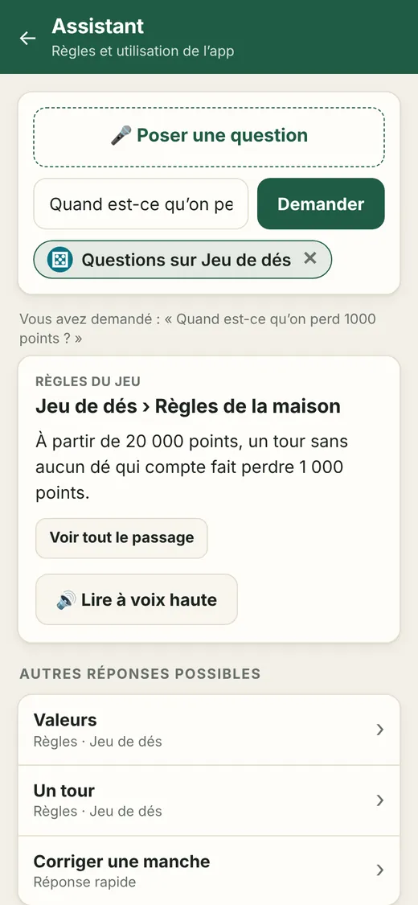
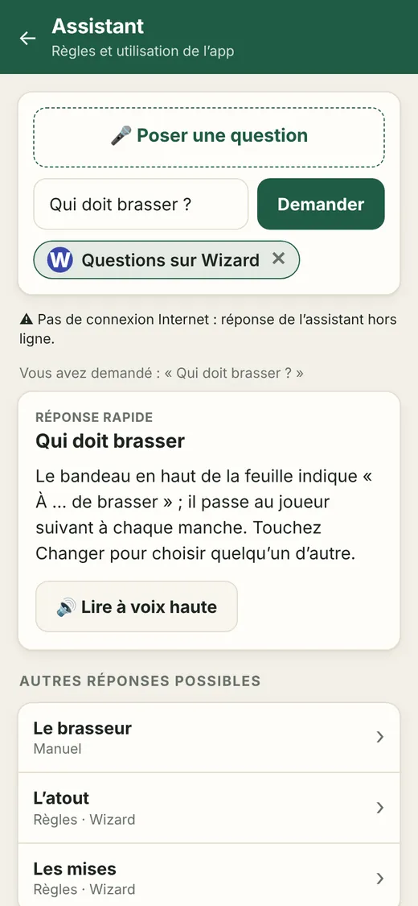
9Résultat et graphique
À la fin d’une partie : le gagnant, le classement et le graphique d’évolution des scores. Revanche relance une partie avec les mêmes joueurs. Les invités peuvent être ajoutés à votre liste.
Le graphique (aussi dans le menu ⋮ d’une partie en cours) trace une ligne par joueur, dans sa couleur ; l’objectif apparaît en pointillé. Touchez le graphique pour voir le pointage de chacun à une manche précise.
Analyse de la partie par Ludo
Après une partie, Ludo peut vous dire comment elle s’est jouée et vous aider à mieux jouer la prochaine fois. Touchez 🔍 Analyse de la partie par Ludo sur l’écran de résultat, ou dans le menu ⋮ d’une partie (même en cours).
- L’app prépare un récapitulatif de la partie : chaque manche ou chaque tour, avec les détails inscrits (mises et plis au Wizard, cases rayées au Yahtzee, mots au Scrabble, ratés et pénalités au jeu de dés, cartes ou dominos restants…). Elle calcule aussi elle-même les faits importants : changements de meneur, meilleurs et pires coups, écarts.
- Ludo répond en quatre parties : Points tournants (les moments où la partie a basculé), Erreurs et occasions manquées, Recommandations (des conseils de stratégie pour ce jeu, choisis selon ce qui s’est passé), puis Pour la prochaine fois, un conseil pour chaque joueur. L’analyse est lue automatiquement à voix haute ; ⏹ Arrêter la lecture la coupe et 🔊 Lire à voix haute la relit.
- Posez ensuite des questions de suivi sur cette partie (« qu’est-ce que Marie aurait dû faire ? »). La petite étiquette 🔍 Partie : … indique la partie analysée ; touchez ✕ pour revenir aux questions générales.
Vous pouvez aussi simplement demander à Ludo : « Analyse ma dernière partie ».
À savoir : Ludo ne voit que ce qui a été inscrit. Plus la feuille est détaillée, meilleure est l’analyse : avec seulement des totaux (pointage libre, Flip 7, Play Nine…), il ne peut parler que de l’évolution des scores. Sans Internet, l’app affiche seulement les faits calculés, sans l’analyse de Ludo.
10Historique
L’onglet Historique liste toutes les parties, de la plus récente à la plus ancienne, avec la date et le gagnant (ou « en cours »). Touchez une partie pour revoir sa feuille. Une partie terminée peut être rouverte par le menu ⋮.
11Statistiques
- Période (Tout, 12 mois, 30 jours) et jeu : filtrent tout l’écran.
- En résumé : nombre de parties, jeu préféré (ou champion du jeu choisi), et le joueur « en feu 🔥 » qui aligne les victoires.
- Joueurs : parties, victoires, taux et série en cours (avec le record).
- Records (quand un jeu est choisi) : meilleur pointage gagnant, plus grande avance, partie la plus longue.
- Fiche joueur : touchez un nom pour voir son jeu fétiche, sa bête noire (celui qui l’a battu le plus souvent) et ses résultats par jeu.
Une égalité compte comme une victoire pour chacun. Dans une partie en équipes, chaque membre de l’équipe gagnante reçoit la victoire.
12Réglages
Touchez ⚙︎ sur l’accueil. On y trouve les mises à jour, l’aide, les rapports, la sauvegarde et l’affichage.
Mes appareils : synchroniser téléphone, tablette et ordinateur
Vos parties, joueurs et règles maison peuvent être tenus à jour sur tous vos appareils : vous commencez une partie sur le téléphone, vous la continuez sur la tablette.
- Sur un appareil : ⚙︎ Réglages → Mes appareils → 🔗 Relier un autre appareil. Un code QR apparaît.
- Scannez-le avec votre autre appareil (ou envoyez-vous le lien), puis touchez Relier. Sur Android, si l’app est installée, 📱 Relier plutôt l’app Pointage relie l’app au lieu du navigateur.
- C’est tout : les données des deux appareils sont combinées, puis tenues à jour toutes seules, après chaque changement et à l’ouverture de l’app. Recommencez pour relier un troisième appareil.
Si vous avez changé des choses sur les deux appareils, l’app les combine : chaque nouvelle partie est gardée, une même partie modifiée des deux côtés garde la version la plus récente, et un joueur créé sur les deux appareils (même nom) n’apparaît qu’une fois. Une partie supprimée l’est partout. Ne sont pas synchronisés, car propres à chaque appareil : la voix, la rotation de l’écran, l’écran allumé et la sauvegarde automatique.
Chaque personne relie ses propres appareils : les données de chacun restent séparées. Tout est chiffré de bout en bout (la clé est dans le code QR, ne le montrez qu’à vos appareils) ; il n’y a ni compte ni mot de passe. 🔄 Synchroniser force une synchronisation ; Délier arrête la synchronisation sur cet appareil, qui garde ses données.
Mises à jour
App Android : Vérifier les mises à jour montre la version installée et, s’il y en a une nouvelle, ce qui a changé. Télécharger et installer fait le reste ; Android demande de confirmer. La première fois, il faut autoriser Pointage à installer des applications (« Autoriser cette source »), puis toucher de nouveau le bouton. L’app vérifie aussi d’elle-même une fois par jour et affiche un bandeau sur l’accueil. Vos parties sont conservées.
App web (iPhone, ordinateur) : elle se met à jour toute seule.
Partager l’app
Réglages → Partager l’app montre le code QR de la page d’installation. Faites-le scanner avec l’appareil photo d’un autre téléphone : la page s’ouvre et propose la bonne version (Android ou iPhone).
- 🔍 Agrandir le code (ou toucher le code) l’affiche en grand, plus facile à scanner.
- 📤 Partager le lien envoie l’adresse tinyurl.com/pointagef par texto, courriel, Messenger…
Signaler un problème ou suggérer
Le bouton 💬 Signaler un problème / suggérer (Réglages, ou menu ⋮ d’une partie) envoie un message au responsable de l’app :
- Choisissez Un problème ou Une suggestion.
- Décrivez ce qui s’est passé ou ce que vous proposez ; ajoutez votre prénom si vous voulez.
- Laissez cochée « Joindre l’état de la partie » : cela aide à reproduire le problème.
- Touchez Envoyer. Sans Internet, le rapport part plus tard tout seul.
Les rapports sont visibles dans le dépôt public de l’app ; évitez d’y mettre des renseignements personnels.
Sauvegarde
Les données restent dans l’appareil. Pour ne rien perdre :
- Exporter une sauvegarde : crée un fichier
.jsonà garder (Google Drive, courriel…). - Importer une sauvegarde : remplace les données de l’appareil par celles d’un fichier.
- Sauvegarde automatique (app Android, et Chrome ou Edge sur ordinateur) : activez l’interrupteur et choisissez un dossier une fois. Quelques secondes après chaque changement, l’app y écrit
Pointage-sauvegarde.json, toujours à jour, plus une copie par mois. Sur ordinateur, le navigateur peut redemander votre accord à la réouverture : un bandeau « Sauvegarde automatique en pause » apparaît alors sur l’accueil ; touchez Autoriser.
Pointage-sauvegarde.json.Garder l’écran allumé
Par défaut, l’écran ne se met pas en veille tant que l’app est ouverte. Il s’éteint normalement quand vous changez d’app. Pour revenir à la veille habituelle : Réglages → Affichage → « Garder l’écran allumé ».
Voix de Ludo
Réglages → Voix de Ludo choisit la voix qui lit les réponses de Ludo :
- Voix naturelle (Internet) (activée par défaut) : une voix de Google très naturelle, en français canadien. Choisissez parmi 4 voix (2 femmes, 2 hommes) ; chaque choix fait entendre un exemple. Elle sert quand il y a Internet.
- Voix du téléphone : utilisée sans Internet, ou si la voix naturelle est désactivée. « Automatique » prend la meilleure voix française installée ; vous pouvez en choisir une autre et l’écouter avec ▶ Écouter.
- Vitesse de lecture : lente, normale ou rapide, pour les deux voix.
Pour de meilleures voix du téléphone : sur Android, Paramètres → Accessibilité → Synthèse vocale → moteur Google → Installer des données vocales → Français (Canada) ; sur iPhone, Réglages → Accessibilité → Contenu énoncé → Voix → Français (Canada), une voix « améliorée » ou « premium ».
Rotation de l’écran
Réglages → Affichage → « Rotation de l’écran » :
- Automatique (par défaut) : l’écran pivote quand vous tournez l’appareil, selon le réglage du téléphone.
- Portrait : l’écran reste à la verticale, même si l’appareil est tourné.
- Paysage : l’écran reste à l’horizontale (pratique sur une tablette posée sur la table).
Le choix est retenu et ne touche que Pointage. Dans la version web, le verrouillage fonctionne seulement si l’app est installée sur un appareil Android ; sur iPhone et iPad, utilisez le verrou de rotation du Centre de contrôle.
13Questions fréquentes
L’installation de l’APK est bloquée.
Ouvrez le fichier depuis l’app Fichiers (dossier Téléchargements) plutôt que depuis le navigateur, autorisez l’installation d’applications inconnues, et, si Play Protect avertit, choisissez « Installer quand même ».
L’app ne voit pas la nouvelle version.
Attendez quelques minutes après l’annonce d’une mise à jour, puis touchez de nouveau Vérifier les mises à jour.
Je me suis trompé dans une manche.
Touchez ↶ pour annuler la dernière action, ou touchez la case de la manche pour la corriger.
On a oublié qui devait brasser.
Le bandeau 🃏 en haut de la feuille l’indique. S’il se trompe, touchez Changer.
Mes parties ont disparu.
Les données sont propres à chaque appareil, et séparées entre l’app Android et l’app web. Si vous avez une sauvegarde, utilisez Importer. Activez la sauvegarde automatique pour l’avenir.
Peut-on installer l’APK sur un iPhone ?
Non : sur iPhone et iPad, utilisez l’app web ajoutée à l’écran d’accueil (section Installer).
La voix comprend mal.
Parlez près du téléphone, séparez les groupes de dés par « et », et vérifiez la ligne « Entendu ». Si une phrase revient souvent mal comprise, signalez-la avec 💬.